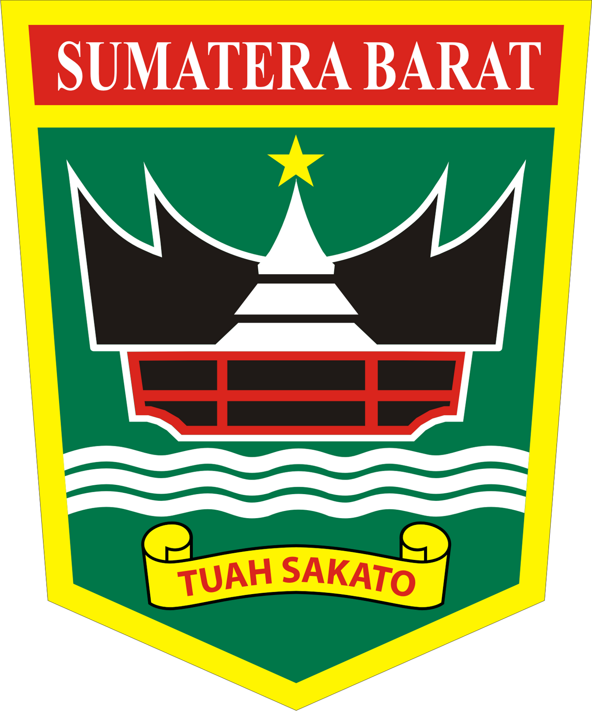

Sumatra Barat

Sumatera Barat adalah salah satu provinsi di Indonesia yang terletak di pulau Sumatera dengan Padang sebagai ibu kotanya.
Sesuai dengan namanya, wilayah provinsi ini menempati sepanjang pesisir barat Sumatera bagian tengah, dataran tinggi Bukit Barisan di sebelah timur,
dan sejumlah pulau di lepas pantainya seperti Kepulauan Mentawai. Dari utara ke selatan, provinsi dengan wilayah seluas 42.297,30 km² ini berbatasan
dengan empat provinsi, yakni Sumatera Utara, Riau, Jambi, dan Bengkulu.
Sumatera Barat adalah rumah bagi etnis Minangkabau, walaupun wilayah adat Minangkabau sendiri lebih luas dari wilayah administratif Provinsi Sumatera Barat saat ini. Provinsi ini berpenduduk sebanyak 4.846.909 jiwa dengan mayoritas beragama Islam. Provinsi ini terdiri dari 12 kabupaten dan 7 kota dengan pembagian wilayah administratif sesudah kecamatan di seluruh kabupaten (kecuali kabupaten Kepulauan Mentawai) dinamakan sebagai nagari.